Work Detail
NETFLIX 클론 웹사이트
넷플릭스 메인 페이지를 참고해 배너, 랭킹 슬라이드, FAQ, 멤버십 유도 섹션을 반응형으로 구현한 클론 프로젝트입니다.
프로젝트 개요
실제 넷플릭스 랜딩 페이지의 정보 흐름을 참고해 첫 인상에서 서비스 이해와 가입 행동까지 이어지는 구조를 구성했습니다. 히어로 카피와 이메일 입력 폼, 콘텐츠 랭킹, 가입 이유, FAQ가 하나의 전환 흐름으로 이어지도록 설계했습니다.
기획 의도
OTT 랜딩 페이지의 핵심인 "신뢰 + 행동 유도"를 짧은 스크롤 안에서 전달하는 것을 목표로 했습니다.
- 히어로/하단 가입 섹션의 CTA를 반복해 사용자 행동 유도
- 배너 → 인기 콘텐츠 → 혜택 → FAQ 순서로 정보 피로도 최소화
- 다크 톤 대비와 타이포 위계로 브랜드 무드와 가독성 동시 확보
구현 방식
시맨틱한 섹션 구조를 기준으로 콘텐츠를 모듈화하고, Swiper를 활용해 인기 콘텐츠 캐러셀을 반응형으로 구현했습니다. FAQ는 details/summary 패턴으로 구성해 접근성과 유지보수성을 함께 확보했습니다.
- 브레이크포인트별 slidesPerView/spaceBetween 조정으로 디바이스 대응
- 이메일 입력 폼과 버튼 중심의 명확한 전환 동선 설계
- 모달 닫기 동작 및 기본 인터랙션을 단순 스크립트로 구성
사용 툴
구현에 사용한 주요 도구입니다.
작업물 미리보기
기본 화면은 PC 기준으로 먼저 보여주고, 태블릿/모바일 화면은 드롭다운을 펼쳐 확인할 수 있도록 구성했습니다. 섹션별 반응형 변화 흐름을 간결하게 비교할 수 있습니다.
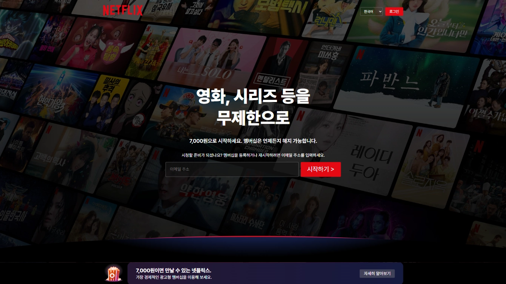
TB / MO 이미지 보기
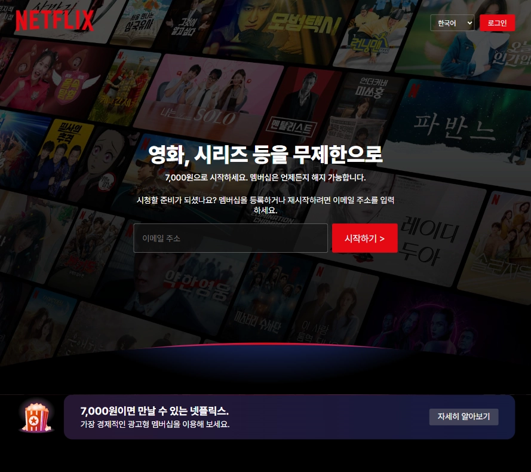
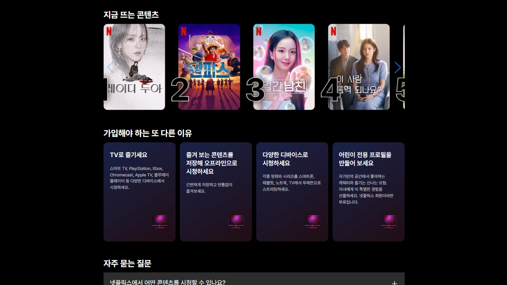
TB / MO 이미지 보기
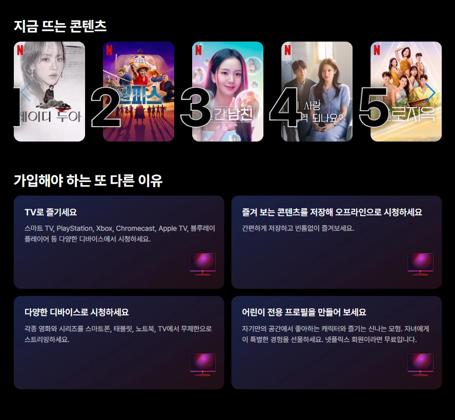
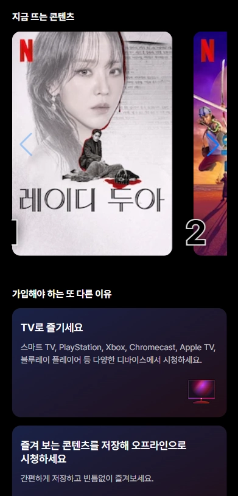
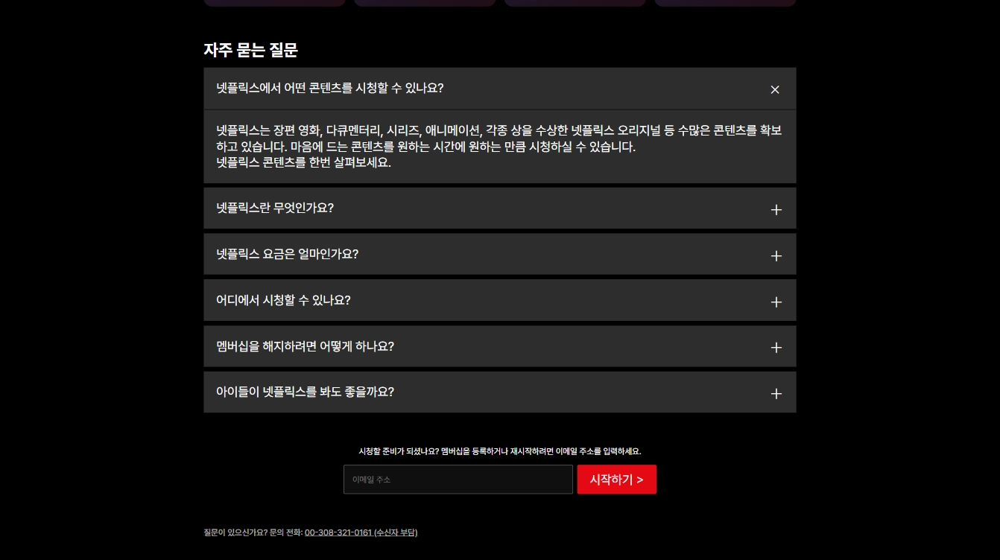
TB / MO 이미지 보기
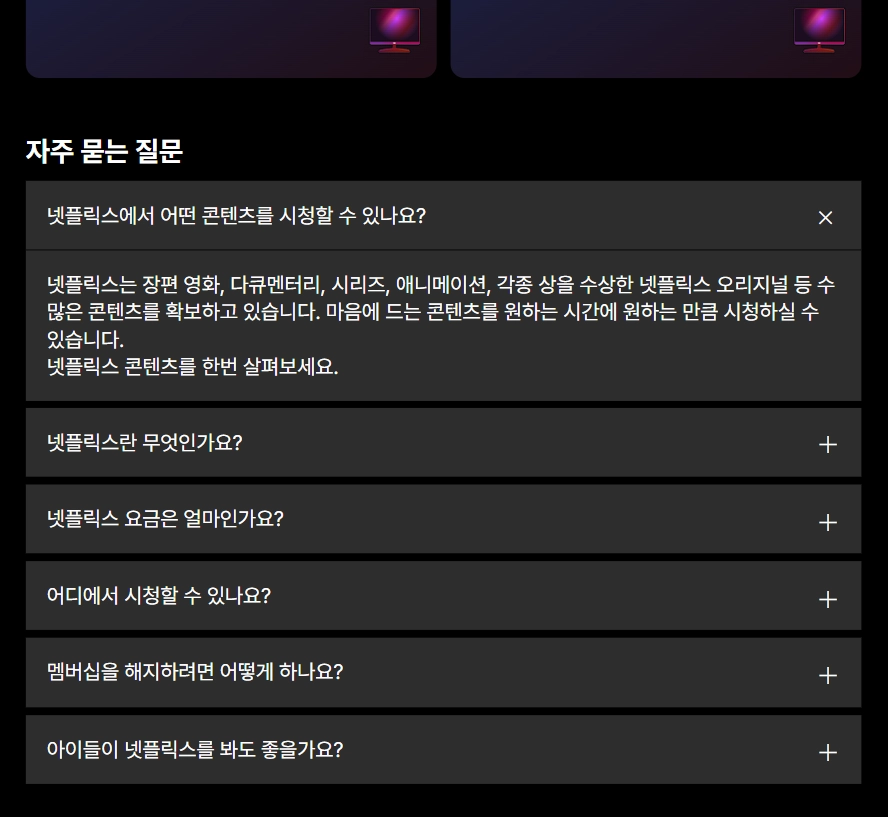
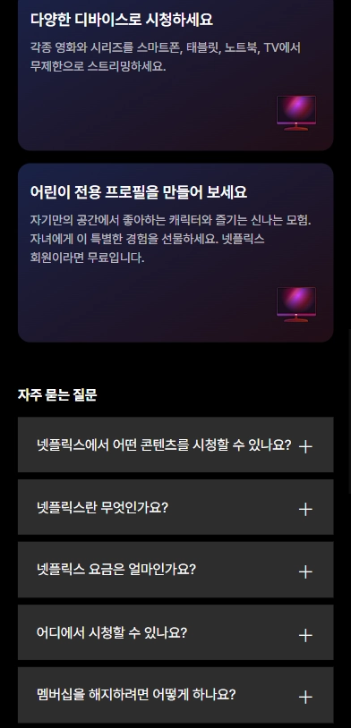
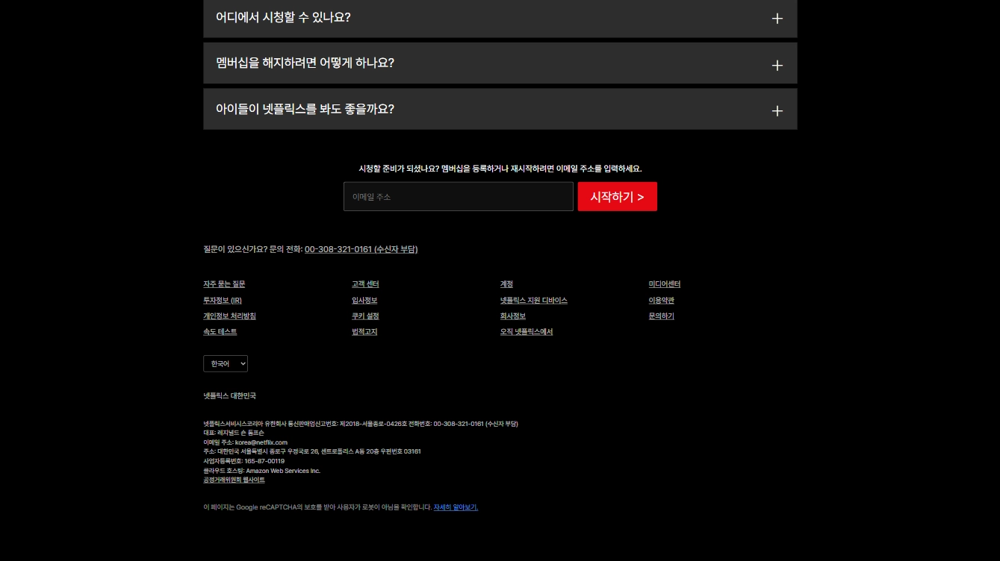
TB / MO 이미지 보기
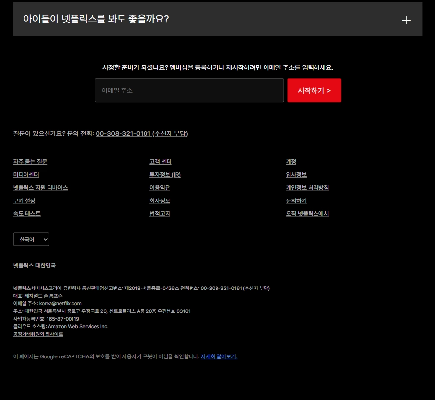
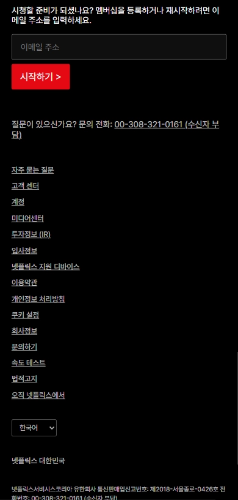
회고
클론 프로젝트에서 중요한 것은 단순한 화면 복제가 아니라 사용자 흐름의 재현이라는 점을 체감했습니다. 섹션 간 리듬, CTA 반복 위치, 모바일 가독성을 함께 다루며 실무형 랜딩 구조를 빠르게 구현하는 경험을 얻었습니다.